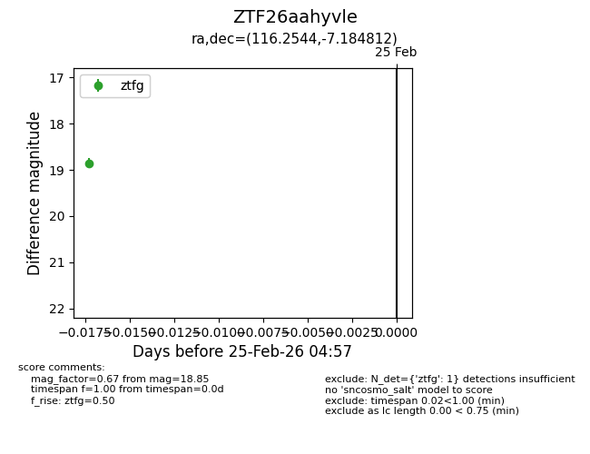
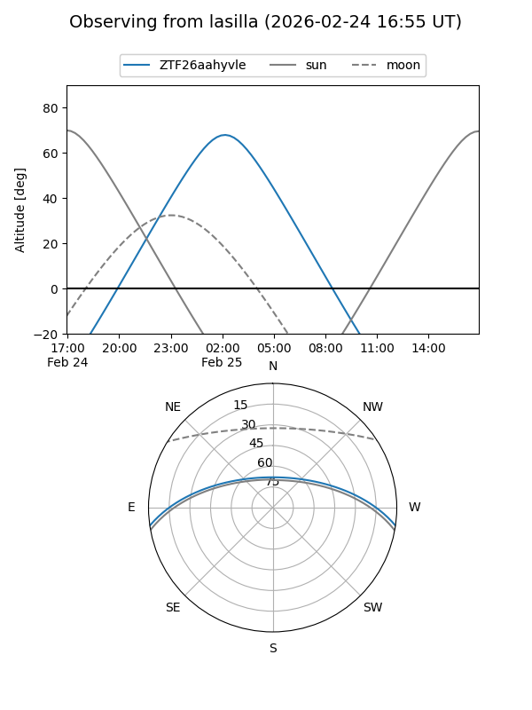
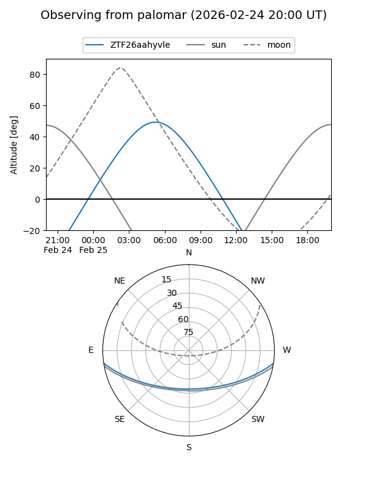

ZTF26aahyvle
Target ZTF26aahyvle at 2026-02-25 04:58
Aliases and brokers:
FINK: link
Lasair: link
ALeRCE: link
alt names
ZTF26aahyvle (ztf,fink_ztf)
Coordinates:
equatorial (ra, dec) = 116.2544,-7.18481
equatorial (HMS+DMS) = 07:45:01.06,-07:11:05.32
galactic (l, b) = (225.5533,+8.48367)
Flags:
Photometry:
last ztfg=18.85
1 ztfg detections
Lightcurve

Visibility


Additional plots